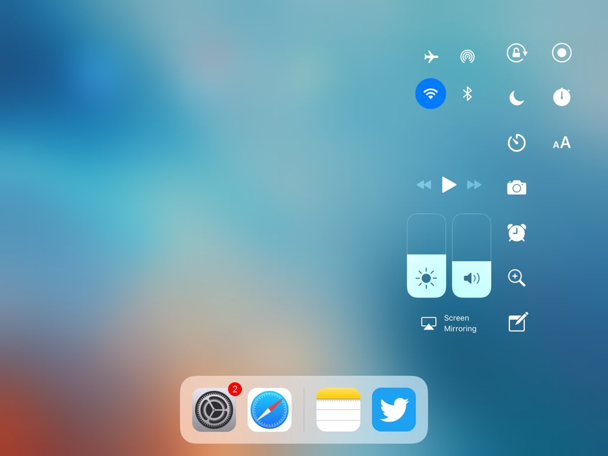

Glacier
Make the iOS 11 (and Maize) control
center look sleek and unified by removing the
module backgrounds and masks.
Screenshot:

Running on iOS 11.1.2 with an iPad
Mini 2
Compatible
with:
iOS 10.x (Maize) (Mostly compatible, a
few bugs) - iOS 11.x
Changelog:
Version
41:
- Use this version over
newer ones to avoid issues
Developer:
Squ1dd13